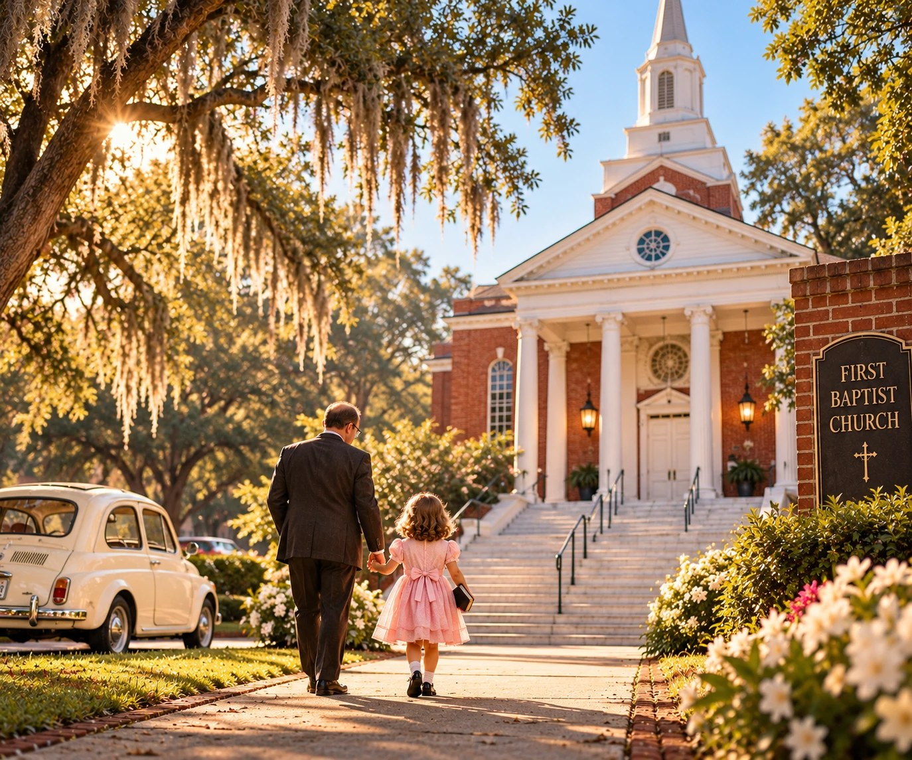

Look to the Father
Read the lyrics

The first song I ever wrote, after my daddy passed.
Verse 1
When I was young, I held my daddy's hand
He was my hero, he was the man
As years went by, I watched him grow old
I knew one day I'd lose his hold
Verse 2
He looked at me and gently said
“Don't be afraid of what's ahead
When I am gone and you feel alone
I'll tell you where to place your hope”
Chorus
Look to the Father
Look to the Son
Look to the Spirit
Three in One
You can trust God
He truly cares
Lift up your heart
He hears your prayers
Verse 3
Lay down your burdens, lay down your fear
Every tear, He holds them dear
Lift up your hands, speak His name
He is faithful, He's the same
Chorus
Look to the Father
Look to the Son
Look to the Spirit
Three in One
You can trust God
He truly cares
Call on His name
He answers prayers
Bridge
Daddy told me,
“You'll be okay
You don't need me the same old way
When you need strength and when life feels hard
You need the BIG Daddy—
You need God”
Verse 4
Though my dad is gone, the sun still shines
Morning breaks right on time
His love still lives in what he taught
Pointing me back to God
Final Chorus
Look to the Father
Look to the Son
Look to the Spirit
Three in One
I will trust God
He truly cares
I lift my voice—
He answers prayers
Outro
Look to the Father
Look to the Son
And the Holy Spirit
Three in One
Lyrics © 2003 Sheryl Denise Long. All rights reserved.
Music generated with Suno, used under license.
![Artwork for You Can't Burn Down a Church That Lives in Our Hearts: a collage around a glowing wooden cross — a newspaper headline reading Fire destroys church dated 10/24/91 above a photograph of the blaze and a ladder truck, a handbell choir, a robed choir singing, a baptism, a wedding at the altar, a funeral, a Wednesday Night Supper hall, hands folded on a Bible, and a congregation holding one another. The centre reads: Buildings can burn, but they can't destroy the people, the faith, the love, the memories, or the foundation that lives on in our hearts.](art/you-cant-burn-down-a-church.jpg)
![Artwork for The King Beside His Queen: Phil and Betty with two of their grandchildren, framed by a Marine in dress blues, an artist's brushes, a classroom blackboard and a runner at sunrise. A Marine who served his country with honour. An artist who saw beauty and created it everywhere. A teacher who inspired, encouraged, and made a difference in so many lives. A runner who kept moving forward in life. But most of all, a wonderful husband, father, grandfather, great-grandfather and foster dad. A life of service. A life of creativity. A life of teaching. A life of Love.](art/the-king-beside-his-queen.webp)
![Just Listed flyer for 1774 NE 12th Street, Ocala, Florida 34470, $299,500. A pale blue single-storey home under grand oaks, with interior photographs of the living room, updated kitchen and covered patio. Four bedrooms, two baths, about half an acre, in the city, no HOA. New roof 2025, updated kitchen and baths, wood floors, freshly painted inside and out, extra attic insulation, shutters, fenced yard, carport with covered patio, storage shed, home warranty included. Sheri Long, Realtor, Platinum Homes and Land Realty, 352-209-1005, YouCantGoWrongWithLong.com, licence SL3475541.](art/1774-ne-12th-street.jpg)